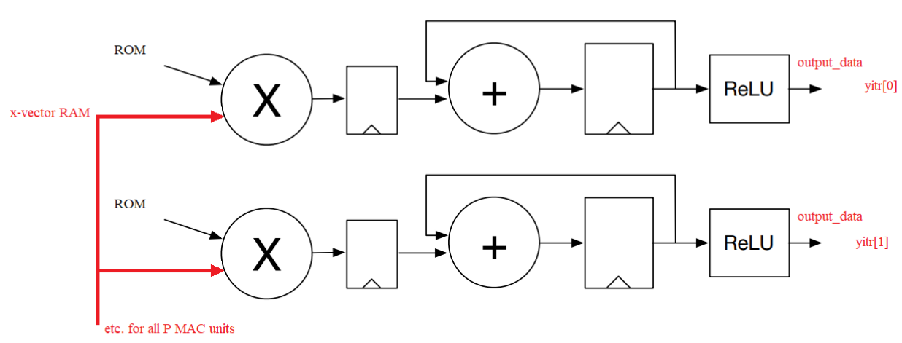
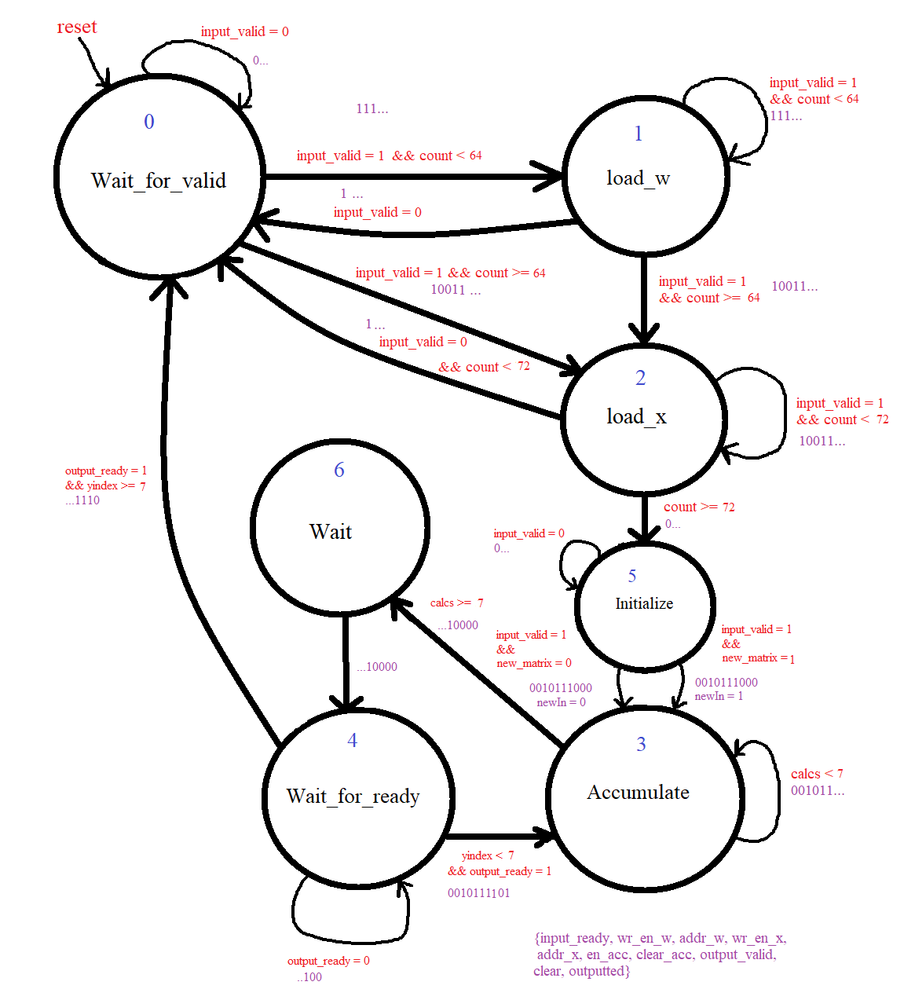
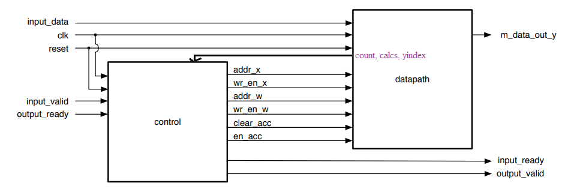

Modular Hardware Accelerator for CNNs
- A specialized FPGA designed in SystemVerilog meant to perform throughput-optimized matrix-vector multiplication for use in CNNs
- The project grade was based on throughput relative to other submissions, and this submission was rank 1
- Also designed a hardware generator in C++ which generates SystemVerilog code based on user-defined parameters such as degree of parallelism
- The datapath consists of parallel multiply-accumulate units and RAM which stores weights and input values for a CNN:

- The control consists of a FSM which efficiently delegates states to each moment of the calculations:

- The control and datapath communicate:
